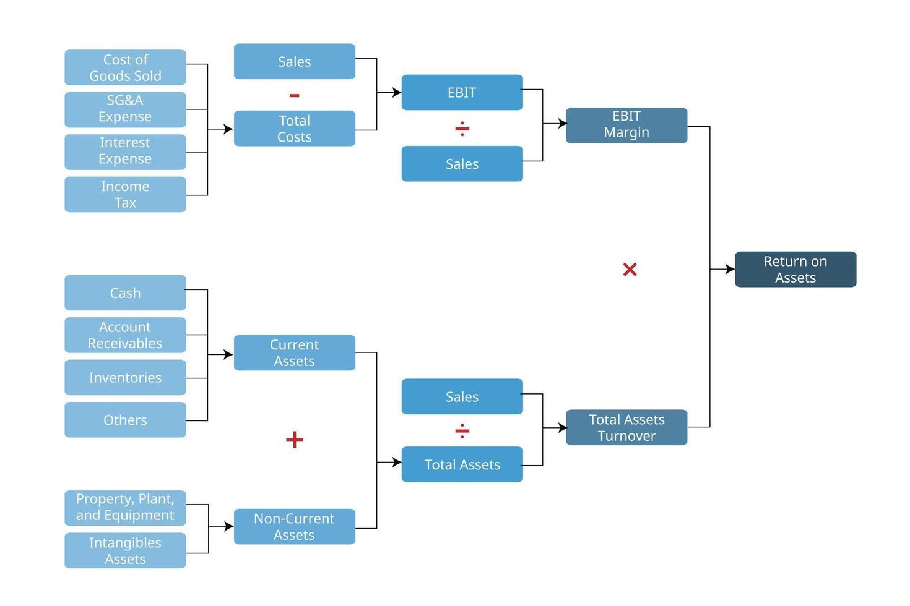

Week 3: Ratio Analyse & Triangulatie | Voor CFO Teams
Als CFO ben je "Primus Inter Pares" - eerste onder gelijken. Dat betekent:
Dit answer sheet bevat:
⚠️ Let op: Philips heeft een negatieve nettowinstmarge (-9.0%). Dit betekent dat ROE ook negatief is, maar de methodologie blijft hetzelfde!
💡 Jullie eindproduct:
- Je kunt de 3 fouten uitleggen aan je team
- Je hebt voorbeelden hoe analisten AI moeten instrueren voor triangulatie
- Je weet hoe je kwaliteitscontrole uitvoert op ratio berekeningen
| Kental / Ratio | Philips | Novartis | Roche |
|---|---|---|---|
| WINSTGEVENDHEID (PROFITABILITY) | |||
| Nettowinstmarge (PM) | -9.0% | 14.0% | 20.6% |
| Omloopsnelheid Activa (AT) | 0.61 | 0.50 | 0.70 |
| Return on Assets (ROA) | -5.5% | 7.0% | 14.4% |
| Return on Equity (ROE) [Gerapporteerd] | -20.0% | 12.7% | 37.1% |
| SOLVABILITEIT (SOLVENCY) | |||
| Equity Multiplier (EM) | 2.64 | 1.82 | 2.57 |
| Debt-to-Equity Ratio | 1.64 | 1.20 | 1.57 |
| MARKTWAARDE (MARKET RATIOS) | |||
| Price-Earnings (P/E) | -10.69 | 13.50 | 14.00 |
| Market-to-Book (P/B) | 1.56 | 1.72 | 4.00 |
| DUPONT IDENTITY CHECK (HULPMIDDEL) | |||
| ROE (Calculated: PM × AT × EM) | -14.5% | 12.7% | 37.1% |
a/b * b/c * c/d = a/d (Ook met negatieve getallen!)
TV = VV + EV; Equity multiplier = TV / EV = ....
P / E = Marktwaarde EV / Nettoresultaat; ROE = Nettoresultaat / Boekwaarde EV
Current Assets / Current Liabilities - Vermogen om kortetermijnverplichtingen te betalen(Current Assets - Inventory) / Current Liabilities - Strengere liquiditeitsmaatstafCash / Current Liabilities - Vermogen om te betalen met alleen cash(Total Assets - Total Equity) / Total Assets - Percentage activa gefinancierd met schuldTotal Debt / Total Equity - Hoeveelheid schuld per eenheid eigen vermogenTotal Assets / Total Equity - Activa per eenheid eigen vermogen; = 1 + D/EEBIT / Interest - Hoe goed EBIT de rente kan dekken(EBIT + Non-cash deductions) / Interest - Vermogen om cash te genereren voor renteCOGS / Inventory - Hoe vaak voorraad verkocht wordt365 / Inventory Turnover - Gemiddeld aantal dagen voorraad op handSales / Trade Receivables - Hoe snel vorderingen geïnd worden365 / Receivables Turnover - Gemiddelde incassotermijnSales / Total Assets - Efficiëntie van alle activa in het genereren van omzetNet Income / Sales - Percentage omzet dat netto winst wordtNet Income / Total Assets - Winst per eenheid activaNet Income / Total Equity - Boekhoudkundig rendement voor aandeelhoudersPrice per Share / EPS - Hoeveel investeerders betalen per euro winst(P/E) / (Earnings Growth %) - P/E gecorrigeerd voor groeiPrice per Share / Sales per Share - Alternatief voor P/EMarket Value per Share / Book Value per Share - Marktwaarde vs boekhoudkundige waardeMarket Value / Replacement Cost - Marktwaarde vs vervangingskosten activaGebruik deze methodologie om ROA te verifiëren via twee verschillende berekenpaden (triangulatie).
